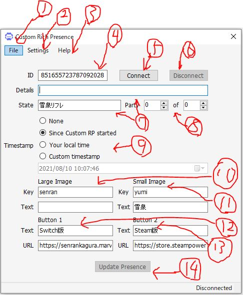
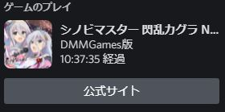

ゲームアクティビティとは？
Discordでは、PC版のみ現在プレイしているゲームをステータスに表示させる機能があります。ただし、表示されるのはSteamのゲームかDiscord側が認証済みのゲームのみです。
設定で対応させることもできますが、ゲームの画像が?マークになります。
こんな感じになっちゃう。
そこをどうにかしたい！そんな人にはRich Presenceがおすすめです。
Rich Presenceとは？
プレイ中のゲーム内容の詳細を表示する機能です。フォートナイトやamong usなどマルチプレイ中心のゲームに実装されています。
インストール方法
いくつかありますが、利便性が高いDiscord-CustomRPを紹介します。上記URLに飛び、最新の実行ファイルをダウンロードします。
終わったら実行しましょう。
警告が出ますが無視して実行します。
使用する言語を選択します。（日本語非対応なので無難に英語にしておきます。）
利用規約が表示されるので同意して続けます。（規約は読んでおいた方がいいです。）
デスクトップ上にショートカットを作成するかどうか聞かれます。チェックを入れましょう。
Installを押せばダウンロードが始まります。
実行するとこのような画面が映ります。
次はこのアプリの使い方を説明します。
偽装方法

1:アプリケーションID、Discord Developerで生成するID。後述します。
2:
3:
4:
5:
6:
7:
8:
9:
10:
11:
12:
13:
14:
15: